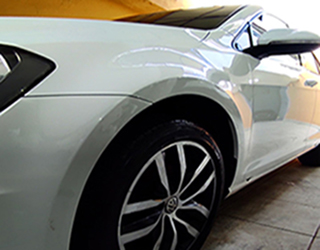

(81) 9 7319-0135
(81) 9 7319-0135 @ESTUDIO.SUPERCARPE
@ESTUDIO.SUPERCARPELAVAGEM SIMPLES
11

LAVAGEM SIMPLES
A LAVAGEM SIMPLES NADA MAIS É DO QUE:
LIMPEZA BASICA NOS PLASTICOS, PORTAS, PAINEL, ASPIRAÇÃO E LIMPEZA DAS DOBRADIÇAS,
LAVAGEM EXTERNA DA PINTURA E CAIXA DE RODAS.
LIMPEZA BASICA NOS PLASTICOS, PORTAS, PAINEL, ASPIRAÇÃO E LIMPEZA DAS DOBRADIÇAS,
LAVAGEM EXTERNA DA PINTURA E CAIXA DE RODAS.